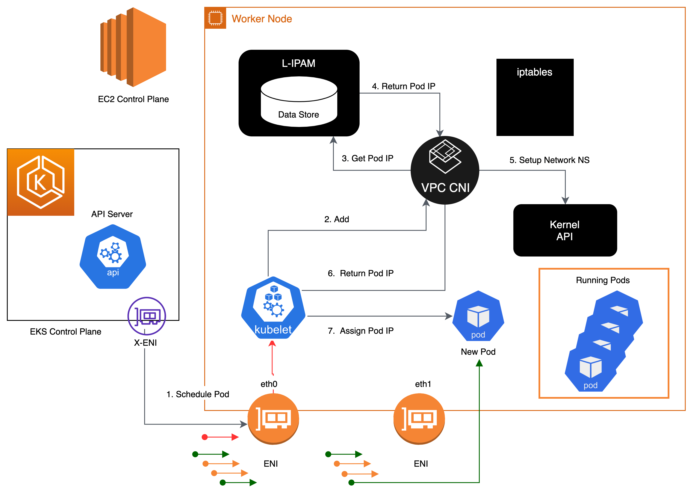

Amazon VPC CNI¶
Amazon EKS 透過 Amazon VPC Container Network Interface(VPC CNI) 外掛程式實現叢集網路。CNI 外掛程式允許 Kubernetes Pods 擁有與 VPC 網路上相同的 IP 位址。更具體地說,Pod 內的所有容器共享一個網路命名空間,它們可以使用本地埠進行通信。
Amazon VPC CNI 有兩個組件:
- CNI 二進制檔,它將設置 Pod 網路以啟用 Pod 到 Pod 的通信。CNI 二進制檔在節點根文件系統上運行,並在新 Pod 添加到節點或從節點中刪除現有 Pod 時由 kubelet 調用。
- ipamd,一個長期運行的節點本地 IP 地址管理 (IPAM) 守護程序,負責:
- 管理節點上的 ENI,以及
- 維護可用 IP 位址或前綴的預熱池
當創建實例時,EC2 會創建並附加一個與主子網關聯的主要 ENI。主子網可以是公有或私有的。在 hostNetwork 模式下運行的 Pods 使用分配給節點主要 ENI 的主要 IP 位址,並與主機共享相同的網路命名空間。
CNI 外掛程式管理節點上的 Elastic Network Interfaces (ENI)。當節點配置時,CNI 外掛程式會自動從節點子網中分配一個池子(IP 或前綴)到主要 ENI。這個池子被稱為預熱池,其大小由節點的實例類型決定。根據 CNI 設置,一個槽可以是 IP 位址或前綴。當 ENI 上的一個槽被分配時,CNI 可能會附加額外的 ENI 並將預熱池的槽附加到節點。這些額外的 ENI 被稱為次要 ENI。每個 ENI 只能支持基於實例類型的特定數量的槽。CNI 會根據需要的槽數量(通常對應於 Pods 的數量)附加更多 ENI 到實例。這個過程一直持續到節點無法再支持額外的 ENI。CNI 還會預先分配"預熱"ENI 和槽,以加快 Pod 啟動。請注意,每種實例類型都有最大的 ENI 數量。這是 Pod 密度(每個節點的 Pod 數量)的一個限制,另一個限制是計算資源。

可附加的網路介面數量以及可使用的槽數量因 EC2 實例類型而異。由於每個 Pod 都會消耗一個槽上的 IP 位址,因此您可以在特定 EC2 實例上運行的 Pods 數量取決於可以附加到該實例的 ENI 數量以及每個 ENI 支持的槽數量。我們建議將 EKS 用戶指南中的最大 Pods 設置為,以避免耗盡實例的 CPU 和記憶體資源。使用 hostNetwork 的 Pods 不包括在此計算中。您可以考慮使用名為 max-pod-calculator.sh 的腳本來計算 EKS 建議的特定實例類型的最大 Pods 數。
概述¶
次要 IP 模式是 VPC CNI 的默認模式。本指南提供了在啟用次要 IP 模式時 VPC CNI 行為的一般概述。ipamd 的功能(IP 地址分配)可能會根據 VPC CNI 的配置設置而有所不同,例如 Prefix Mode、Security Groups Per Pod 和 Custom Networking。
Amazon VPC CNI 被部署為一個名為 aws-node 的 Kubernetes Daemonset,運行在工作節點上。當工作節點配置時,它會附加一個默認的 ENI,稱為主要 ENI。CNI 從附加到節點主要 ENI 的子網中分配一個預熱池的 ENI 和次要 IP 位址。默認情況下,ipamd 嘗試為節點分配一個額外的 ENI。當一個 Pod 被調度並從主要 ENI 分配一個次要 IP 位址時,IPAMD 會分配一個額外的 ENI。這個"預熱"ENI 可以加快 Pod 網路的啟動。當次要 IP 位址池耗盡時,CNI 會添加另一個 ENI 來分配更多 IP 位址。
ENI 和 IP 位址池的數量通過名為 WARM_ENI_TARGET、WARM_IP_TARGET、MINIMUM_IP_TARGET 的環境變數配置。aws-node Daemonset 將定期檢查是否附加了足夠數量的 ENI。當滿足 WARM_ENI_TARGET 或 WARM_IP_TARGET 和 MINIMUM_IP_TARGET 條件時,就認為附加了足夠數量的 ENI。如果附加的 ENI 數量不足,CNI 將調用 EC2 API 附加更多 ENI,直到達到 MAX_ENI 限制。
WARM_ENI_TARGET- 整數,值 >0 表示要求已啟用- 要維護的預熱 ENI 數量。當一個 ENI 作為節點的次要 ENI 附加,但沒有被任何 Pod 使用時,它就是"預熱"的。更具體地說,ENI 的 IP 位址都還沒有被分配給 Pod。
- 示例:考慮一個實例有 2 個 ENI,每個 ENI 支持 5 個 IP 位址。WARM_ENI_TARGET 設置為 1。如果實例上正好有 5 個 IP 位址被使用,CNI 會保持 2 個 ENI 附加到實例。第一個 ENI 正在使用,所有 5 個可能的 IP 位址都在使用。第二個 ENI 是"預熱"的,所有 5 個 IP 位址都在池中。如果在實例上啟動另一個 Pod,需要第 6 個 IP 位址。CNI 將從第二個 ENI 的池中分配第 6 個 IP 位址。第二個 ENI 現在正在使用,不再是"預熱"狀態。CNI 將分配第 3 個 ENI 以保持至少 1 個預熱 ENI。
注意
預熱 ENI 仍然會消耗您的 VPC CIDR 中的 IP 位址。IP 位址在被工作負載(如 Pod)關聯之前是"未使用"或"預熱"的。
WARM_IP_TARGET，整數,值 >0 表示要求已啟用- 要維護的預熱 IP 位址數量。預熱 IP 位址在活動附加的 ENI 上可用,但尚未分配給 Pod。換句話說,可用的預熱 IP 數量是可以分配給 Pod 而不需要附加額外 ENI 的 IP 數量。
- 示例:考慮一個實例有 1 個 ENI,每個 ENI 支持 20 個 IP 位址。WARM_IP_TARGET 設置為 5。WARM_ENI_TARGET 設置為 0。只有在需要第 16 個 IP 位址時,才會附加第二個 ENI,從子網 CIDR 中消耗 20 個可能的地址。
MINIMUM_IP_TARGET，整數,值 >0 表示要求已啟用- 任何時候都要分配的最小 IP 位址數量。這通常用於在實例啟動時預先分配多個 ENI。
- 示例:考慮一個新啟動的實例。它有 1 個 ENI,每個 ENI 支持 10 個 IP 位址。MINIMUM_IP_TARGET 設置為 100。ENI 立即附加 9 個額外的 ENI,總共 100 個地址。這種情況發生,不管 WARM_IP_TARGET 或 WARM_ENI_TARGET 的值如何。
本專案包括一個 Subnet Calculator Excel 文件。此計算器文件模擬了在不同 ENI 配置選項(如 WARM_IP_TARGET 和 WARM_ENI_TARGET)下指定工作負載的 IP 位址消耗情況。

當 Kubelet 收到添加 Pod 的請求時,CNI 二進制檔會查詢 ipamd 以獲取可用的 IP 位址,然後 ipamd 將其提供給 Pod。CNI 二進制檔會連接主機和 Pod 網路。
默認情況下,部署在節點上的 Pods 被分配到與主要 ENI 相同的安全組。或者,Pods 也可以配置為使用不同的安全組。

當 IP 位址池耗盡時,該插件會自動將另一個彈性網路介面附加到實例,並將另一組次要 IP 位址分配到該介面。這個過程一直持續,直到節點無法再支持額外的彈性網路介面。

當 Pod 被刪除時,VPC CNI 將 Pod 的 IP 位址放入 30 秒的冷卻緩存。冷卻緩存中的 IP 位址不會分配給新的 Pods。冷卻期結束後,VPC CNI 將 Pod IP 移回預熱池。冷卻期可以防止 Pod IP 位址過早被回收,並允許集群中所有節點上的 kube-proxy 完成更新 iptables 規則。當 IP 或 ENI 的數量超過預熱池設置的數量時,ipamd 插件會將 IP 和 ENI 返回給 VPC。
如上所述,在次要 IP 模式下,每個 Pod 都會從附加到實例的 ENI 之一獲得一個次要私有 IP 位址。由於每個 Pod 都使用一個 IP 位址,因此您可以在特定 EC2 實例上運行的 Pods 數量取決於可以附加到該實例的 ENI 數量以及它支持的 IP 位址數量。VPC CNI 會檢查 limits 文件,以找出每種實例類型允許的 ENI 和 IP 位址數量。
您可以使用以下公式來確定可以部署在節點上的最大 Pods 數量。
(實例類型的網路介面數量 × (每個網路介面的 IP 位址數量 - 1)) + 2
+2 表示需要主機網路的 Pods,例如 kube-proxy 和 VPC CNI。Amazon EKS 要求 kube-proxy 和 VPC CNI 在每個節點上運行,這些要求已計入 max-pods 值。如果您想運行其他主機網路 Pods,請考慮更新 max-pods 值。
+2 表示使用主機網路的 Kubernetes Pods,例如 kube-proxy 和 VPC CNI。Amazon EKS 要求 kube-proxy 和 VPC CNI 在每個節點上運行,並計入 max-pods。如果您計劃運行更多主機網路 Pods,請考慮更新 max-pods。您可以在啟動模板的用戶數據中指定 --kubelet-extra-args "—max-pods=110"。
例如,在一個由 3 個 c5.large 節點(3 個 ENI 和每個 ENI 最多 10 個 IP)組成的叢集中,當叢集啟動並有 2 個 CoreDNS Pods 時,CNI 將消耗 49 個 IP 位址並將它們保留在預熱池中。預熱池可以加快應用程序部署時的 Pod 啟動。
節點 1(有 CoreDNS Pod): 2 個 ENI,分配 20 個 IP
節點 2(有 CoreDNS Pod): 2 個 ENI,分配 20 個 IP
節點 3(無 Pod): 1 個 ENI,分配 10 個 IP
請記住,基礎設施 Pods(通常作為 daemon set 運行)每個都會佔用 max-pod 計數。這些可能包括:
- CoreDNS
- Amazon Elastic LoadBalancer
- 指標服務器的運營 Pods
我們建議您通過結合這些 Pods 的容量來規劃您的基礎設施。有關每種實例類型支持的最大 Pods 數量,請參見 GitHub 上的 eni-max-Pods.txt。

建議¶
部署 VPC CNI 托管附加元件¶
在配置叢集時,Amazon EKS 會自動安裝 VPC CNI。但是,Amazon EKS 支持托管附加元件,使叢集能夠與底層 AWS 資源(如計算、存儲和網路)進行交互。我們強烈建議您使用托管附加元件(包括 VPC CNI)部署叢集。
Amazon EKS 托管附加元件提供 VPC CNI 的安裝和管理功能for Amazon EKS 叢集。Amazon EKS 附加元件包含最新的安全修補程式、錯誤修復,並經 AWS 驗證可與 Amazon EKS 配合使用。VPC CNI 附加元件使您能夠持續確保 Amazon EKS 叢集的安全性和穩定性,並減少安裝、配置和更新附加元件所需的工作量。此外,托管附加元件可通過 Amazon EKS API、AWS Management Console、AWS CLI 和 eksctl 進行添加、更新或刪除。
您可以使用 --show-managed-fields 標誌與 kubectl get 命令查找 VPC CNI 的托管字段。
托管附加元件通過每 15 分鐘自動覆蓋配置來防止配置漂移。這意味著,通過 Kubernetes API 在附加元件創建後對托管附加元件進行的任何更改,都將被自動漂移預防過程覆蓋,並在附加元件更新過程中設置為默認值。
EKS 管理的字段列在 managedFields 下,管理者為 EKS。EKS 管理的字段包括服務帳戶、映像、映像 URL、存活探測、就緒探測、標籤、卷和卷掛載。
信息
最常用的字段,如 WARM_ENI_TARGET、WARM_IP_TARGET 和 MINIMUM_IP_TARGET 不受管理,在更新附加元件時不會被協調。對這些字段的更改將在附加元件更新時得到保留。
我們建議在更新生產叢集之前,先在非生產叢集中測試附加元件行為以獲得特定配置。此外,請遵循 EKS 用戶指南中關於附加元件配置的步驟。
遷移到托管附加元件¶
您將管理自管理 VPC CNI 的版本兼容性和更新安全修補程式。要更新自管理附加元件,您必須使用 Kubernetes API 和 EKS 用戶指南中概述的說明。我們建議將現有 EKS 叢集遷移到托管附加元件,並強烈建議在遷移之前備份您當前的 CNI 設置。要配置托管附加元件,您可以使用 Amazon EKS API、AWS Management Console 或 AWS 命令行界面。
如果字段列為托管,Amazon EKS 將用默認設置替換 CNI 配置設置。我們警告不要修改托管字段。附加元件不會協調像預熱環境變量和 CNI 模式這樣的配置字段。在遷移到托管 CNI 時,Pods 和應用程序將繼續運行。
更新前備份 CNI 設置¶
VPC CNI 在客戶數據平面(節點)上運行,因此 Amazon EKS 不會在發布新版本或更新您的叢集到新的 Kubernetes 次要版本後自動更新附加元件(托管和自管理)。要更新現有叢集的附加元件,您必須通過 update-addon API 或在 EKS 控制台的附加元件中單擊"立即更新"來觸發更新。如果您已部署自管理附加元件,請遵循更新自管理 VPC CNI 附加元件中提到的步驟。
我們強烈建議一次只更新一個次要版本。例如,如果您當前的次要版本是 1.9,而您想更新到 1.11,您應該先更新到 1.10 的最新修補版本,然後再更新到 1.11 的最新修補版本。
在更新 Amazon VPC CNI 之前,請檢查 aws-node Daemonset。備份現有設置。如果使用托管附加元件,請確認您沒有更新任何 Amazon EKS 可能覆蓋的設置。我們建議在您的自動化工作流程中添加更新後掛鉤,或在附加元件更新後手動應用步驟。
對於自管理附加元件,請將備份與 GitHub 上的 releases 進行比較,以查看可用的版本並熟悉您想要更新到的版本中的變更。我們建議使用 Helm 來管理自管理附加元件,並利用值文件來應用設置。任何涉及 Daemonset 刪除的更新操作都會導致應用程序停機,必須避免。
了解安全上下文¶
我們強烈建議您了解用於有效管理 VPC CNI 的安全上下文。Amazon VPC CNI 有兩個組件:CNI 二進制檔和 ipamd (aws-node) Daemonset。CNI 作為二進制檔在節點上運行,可以訪問節點根文件系統,並擁有特權訪問權限,因為它處理節點級別的 iptables。當 Pods 被添加或刪除時,CNI 二進制檔由 kubelet 調用。
aws-node Daemonset 是一個長期運行的進程,負責節點級別的 IP 地址管理。aws-node 在 hostNetwork 模式下運行,允許訪問環回設備和同一節點上其他 Pods 的網路活動。aws-node init-container 以特權模式運行,並掛載 CRI 套接字,允許 Daemonset 監視 Pods 在節點上的 IP 使用情況。Amazon EKS 正在努力消除 aws-node init 容器的特權要求。此外,aws-node 需要更新 NAT 條目,並加載 iptables 模塊,因此以 NET_ADMIN 特權運行。
Amazon EKS 建議部署 aws-node 清單定義的安全策略,用於 Pods 的 IP 管理和網路設置。請考慮更新到最新版本的 VPC CNI。此外,如果您有特定的安全要求,請考慮在 GitHub 問題中提出。
為 CNI 使用單獨的 IAM 角色¶
AWS VPC CNI 需要 AWS Identity and Access Management (IAM) 權限。在使用 IAM 角色之前,必須設置 CNI 策略。您可以使用 AmazonEKS_CNI_Policy,這是 AWS 管理的 IPv4 叢集的策略。AmazonEKS CNI 管理策略只有 IPv4 叢集的權限。您必須為 IPv6 叢集創建一個單獨的 IAM 策略,權限列表在此。
默認情況下,VPC CNI 繼承Amazon EKS 節點 IAM 角色(托管和自管理節點組)。
強烈建議為 Amazon VPC CNI 配置一個單獨的 IAM 角色,並附加相關策略。否則,Amazon VPC CNI 的 Pods 將獲得分配給節點 IAM 角色的權限,並有權訪問分配給節點的實例配置文件。
VPC CNI 插件創建並配置了一個名為 aws-node 的服務帳戶。默認情況下,該服務帳戶綁定到附有 Amazon EKS CNI 策略的 Amazon EKS 節點 IAM 角色。要使用單獨的 IAM 角色,我們建議創建一個新的服務帳戶,並附加 Amazon EKS CNI 策略。要使用新的服務帳戶,您必須重新部署 CNI Pods。在創建新叢集時,請考慮為 VPC CNI 托管附加元件指定 --service-account-role-arn。請確保從 Amazon EKS 節點角色中刪除 Amazon EKS CNI 策略,包括 IPv4 和 IPv6。
建議阻止對實例元數據的訪問,以最小化安全漏洞的影響範圍。
處理存活/就緒探測失敗¶
我們建議增加 EKS 1.20 及更高版本叢集的存活和就緒探測超時值(默認 timeoutSeconds: 10)以防止探測失敗導致您的應用程序 Pod 陷入 containerCreating 狀態。這個問題在數據密集型和批處理叢集中有所發現。高 CPU 使用導致 aws-node 探測健康失敗,導致未滿足 Pod CPU 請求。除了修改探測超時之外,請確保正確配置 aws-node 的 CPU 資源請求(默認 CPU: 25m)。我們不建議更新設置,除非您的節點出現問題。
我們強烈鼓勵您在與 Amazon EKS 支持團隊互動時,在節點上運行 sudo bash /opt/cni/bin/aws-cni-support.sh。該腳本將有助於評估節點上的 kubelet 日誌和內存利用率。請考慮在 Amazon EKS 工作節點上安裝 SSM Agent 以運行該腳本。
在非 EKS 優化 AMI 實例上配置 IPTables 轉發策略¶
如果您使用自定義 AMI,請確保在 kubelet.service 下將 iptables 轉發策略設置為 ACCEPT。許多系統將 iptables 轉發策略設置為 DROP。您可以使用 HashiCorp Packer 和來自 AWS GitHub 上的 Amazon EKS AMI 存儲庫的構建規範和配置腳本來構建自定義 AMI。您可以更新 kubelet.service,並按照此處指定的說明創建自定義 AMI。
定期升級 CNI 版本¶
VPC CNI 是向後兼容的。最新版本適用於所有 Amazon EKS 支持的 Kubernetes 版本。此外,VPC CNI 作為 EKS 附加元件提供(請參見上面的"部署 VPC CNI 托管附加元件")。雖然 EKS 附加元件協調附加元件的升級,但它不會自動升級像 CNI 這樣的附加元件,因為它們在數據平面上運行。您有責任在工作節點升級後升級 VPC CNI 附加元件。